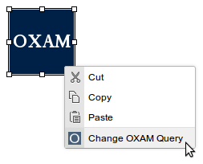

Click on the OXAM icon.

A dialog will appear with several fields for you to search OXAM by:
-
Text: type a search query and find exam papers with the keywords specified
-
Examination: select an examination from the full list of examinations
-
Year: select a year to filter your examinations by
Note that you must EITHER use a text search query OR select an exam and year. If you wish to filter a text search by year, simply include the year in your search terms (e.g. "computer science 2013")
Search as you wish, then click the 'Preview' tab to see the results.
If the results are to your liking, simply click OK to embed the search at the cursor position.

When the page is loaded, the user will see exactly the same results as you saw in the preview.
If you wish to edit the search after embedding it, right click on the placeholder and click 'Change OXAM Query' to modify the results.
